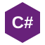
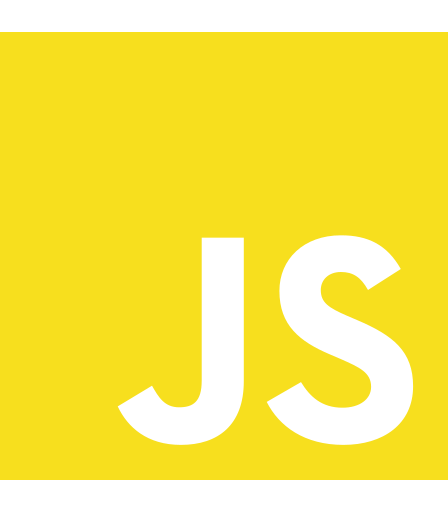
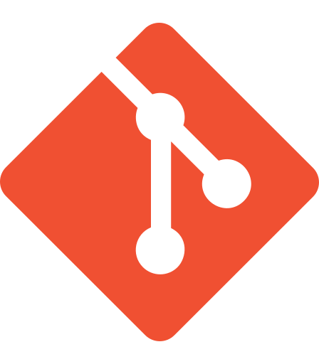
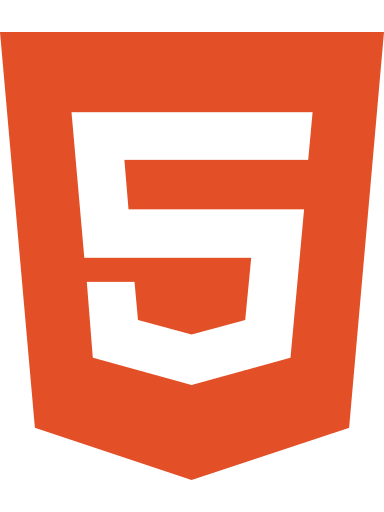
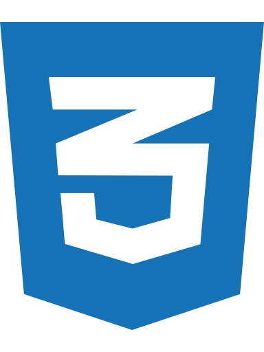
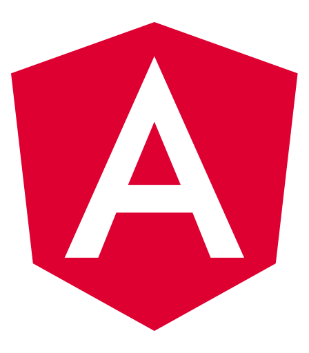
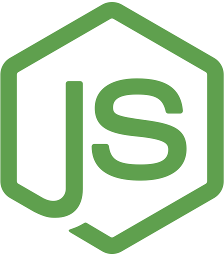
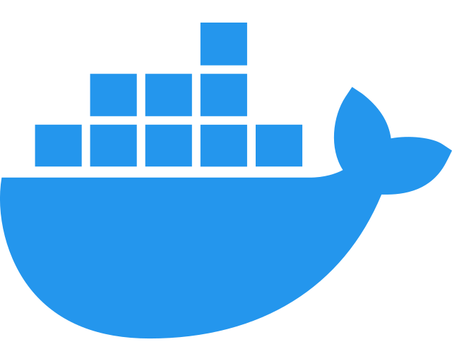

Sobre mí
Más que un currículum: cómo pienso, cómo trabajo, las tecnologías que han formado mi carrera y las que estoy incorporando hoy.
Mi trayectoria
Soy Ingeniero de Ejecución en Informática y he desarrollado gran parte de mi carrera en backend y sistemas empresariales. Mi experiencia se concentra en .NET, C#, SQL Server, integración de sistemas, APIs y modernización de aplicaciones.
Cómo pienso y trabajo
Frente a un problema prefiero analizar alternativas, evaluar riesgos y anticipar escenarios antes de tomar una decisión técnica. Busco soluciones simples de mantener, con responsabilidades claras y una evolución razonable en el tiempo.
Tecnologías que uso
Las ordeno desde mi base profesional hacia las tecnologías que estoy incorporando y profundizando actualmente.

C# SQL Server
JavaScript
Git
HTML5
CSS3 TypeScriptEn constante aprendizaje
Actualmente estoy profundizando en tecnologías que complementan mi base backend y me permiten construir soluciones más completas, automatizables y preparadas para cloud.

Angular React
Node.js
Docker AzureMás allá de lo técnico
Con el tiempo entendí que desarrollar software no se trata sólo de escribir buen código. También importan la comunicación, el trabajo colaborativo, comprender el negocio y explicar con claridad decisiones, dependencias y riesgos.
Este sitio complementa mi perfil profesional formal. Para revisar el detalle de mi experiencia laboral puedes visitar mi LinkedIn; para código y proyectos, mi GitHub.